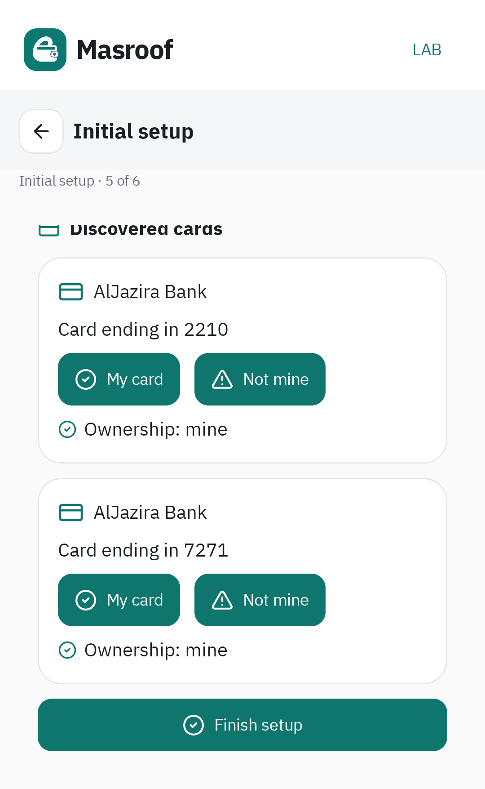
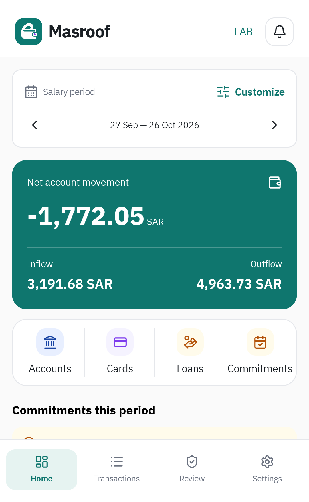
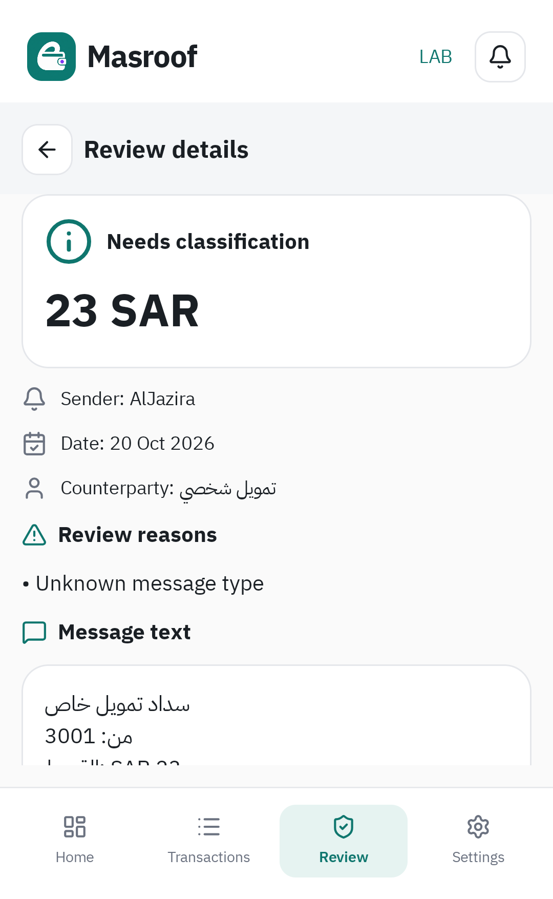
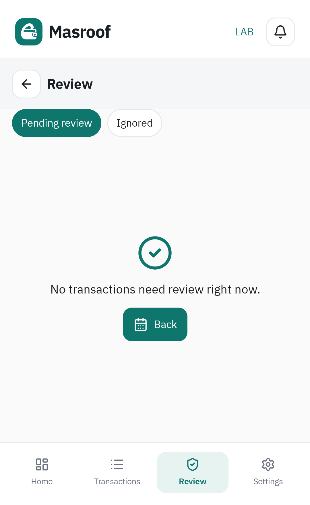

مصروف المختبر: نفس تجربة الفعلي، بمحرك التفسير الجديد وML
اكتملت مراحل النسخ والربط وML والتنظيف والقبول المحلي. حالة CI متاحة في طلب الدمج البديل.
النطاق المختبر فقط. لم يُعدّل أي ملف في app/ أو ui-kit/. الدخول ما زال من إعدادات المطورين في الحزمة نفسها. لا تثبيت لحزمة أخرى ولا ترحيل لبيانات المختبر السابق.
الواجهة والحسابات المالية أصبحت من كود الفعلي نفسه؛ المحرك المستقل وLessCode وML يزوّدون هذا المسار بالحقائق المفسّرة.
lab/ml-assist/. تقرير الفصل والتقييم الحالي يحل محل وصف توزيع ML وإصداره السابق أدناه؛ بقية أدلة رحلة الواجهة محفوظة.ما الذي أُصلح؟
| المشكلة | التغيير | دليل القبول |
|---|---|---|
| اختلاف الواجهات والخطوات | توليد واجهات الفعلي وViewModels ومساراته من مصدر واحد، وإزالة الواجهات الموازية. | قفل المصدر + صور الرحلة |
| عدم وجود خطوة تالية بعد الملكية | نفس إعداد الفعلي: البنك والفترة، الاستيراد، الحسابات والبطاقات، ثم إكمال الإعداد. | زر الإكمال اختُبر فعليًا |
| الرئيسية فارغة أو غير متاحة | ربط نتائج المحرك بعقد ParsedEvent ثم Room والمصالحة وحسابات الفعلي الأصلية. | ٧ رسائل = ٧ حركات؛ ٥ صيغ الصور = ٥ حركات |
| مراجعات كثيرة لصيغ معروفة | إصلاح استخراج الحقائق والأدوار وتعارض العائلات؛ الاعتماد التلقائي بعد ملكية الحساب/البطاقة. | صفر مراجعة للصيغ المعروفة في مجموعتي القبول |
| القروض غير معروفة | نقل نوع التمويل والقسط والمتبقي من المحرك إلى حقائق الفعلي؛ اعتماد القرض الواضح بالطريقة الأصلية. | تطابق القروض والالتزامات مع المسار المرجعي |
| المراجعة تنقل إلى صفحة البطاقة | نفس ReviewRoute وقرارات الفعلي؛ الصيغة المجهولة تُحل من صفحة المراجعة. | تصنيف قسط عبر الواجهة والعودة للقائمة |
| الملكية تتكرر | إعادة استخدام سجلات الفعلي ومعرّفات الحساب/البطاقة المؤهلة بالبنك. | إعادة الاستيراد وإعادة الفتح دون تكرار الحركات |
| تعذر الدخول أو خطر إنشاء قاعدة فارغة | مساحة تخزين جديدة بنفس مخطط الفعلي، فتح يفشل بأمان، وحماية من حذف SQLite للملف التالف. | اختبار تلف على Android؛ الملف محفوظ حتى المسح الصريح |
| المسح والاستعادة وإغلاق العملية | مسح نطاق المختبر فقط، إيقاف أعماله، انتظار الكتابات، وحماية إعادة إنشاء الشاشة. | مسح مع إعادة إنشاء الشاشة + عملية جديدة + تحديث APK موقّع |
| ML غير تشغيلي | نموذج محلي مدرّب + استدلال + أمثلة بشرية + حفظ ذري + إعادة معالجة المعلّق. | صيغة حوالة جديدة وقسط يتعلم من قرار واحد ويستمر بعد إعادة الفتح |
| CI لا يطابق التنفيذ | استبدال اختبارات التنفيذ المحذوف برحلات حقيقية، والتحقق من قابلية إعادة التدريب ومصدر النسخة. | فحوص JVM والجهاز والبناء وlint وdetekt |
قاعدة البيانات: ١٤ جدولًا من الفعلي + جدولان مساعدان فقط
لم ننشئ تصميمًا ماليًا آخر. lab_replica_masroof.db يستخدم مخطط الفعلي الإصدار ١٨ وبصمة 71f1193767b3aa12bcb6cc6e7ce77147 كما هو. الجداول التالية هي الموجودة أصلًا في الفعلي:
| الجدول المعاد استخدامه | المهمة |
|---|---|
raw_sms | الرسالة الأصلية |
raw_sms_provider_alias | هوية نسخة الرسالة من صندوق الوارد |
parsed_event | حقائق التفسير |
bank_registry | البنوك |
account_registry | الحسابات وملكيتها |
card_registry | البطاقات وربطها وملكيتها |
credit_facility | مجموعة البطاقة الائتمانية |
loan_registry | القروض |
financial_transaction | الحركات المالية |
financial_transaction_raw_sms_link | ربط الحركة برسائلها |
commitment | الالتزامات |
review_item | المراجعة وقراراتها |
user_correction | التصحيحات البشرية |
processing_retry | إعادة محاولة المعالجة |
قاعدة مستقلة lab_replica_learning.db فيها engine_interpretation للتتبع ونسخة المحرك/النموذج، وlearning_label لأمثلة التصحيح. لا رصيد ولا حركة مالية مكررة فيهما. النموذج المحفوظ ملف محلي ذري. ملفات المختبر القديم محفوظة ولا تُفتح.
أين التغيير وأين إعادة الاستخدام؟
البناء يقرأ ٥٧٦ ملف مصدر ومورد محميًا، ويولّد ٥١٩ ملف Kotlin للنسخة التشغيلية. شاشات الإعداد والرئيسية والحسابات والبطاقات والقروض والالتزامات والحركات والمراجعة والإعدادات ومساراتها هي ملفات الفعلي المنقولة آليًا. المحلل القديم متاح للاختبارات المرجعية فقط ولا يدخل تشغيل المختبر.
التغييرات المحكومة في ١٤ ملف تهيئة تربط الحاوية والمحرك والسياق والعاملين ومزود الملفات، وتضيف قائمة LAB للمسح والعودة، وتحافظ على لغة العملية العامة. لا تعديل لشاشات المراجعة أو حسابات الداشبورد. أُزيل أكثر من ٤٥ ألف سطر من التنفيذ الموازي وملفاته واختباراته القديمة، وبقيت عقود قيم المال والبنك فقط من Finance Core.
بقيت واجهة تشخيص صغيرة مهملة BetaContainer وعلامة مسار مخطط قديم لتوافق اختبارات العزل الموجودة في الفعلي؛ لا قاعدة ولا شاشات ولا حسابات مالية فيها.
قائمة الملفات كاملة والحذف وحدود التعديل · كل ملفات الفعلي وبصماتها · تغييرات التهيئة حرفيًا
ملفات الربط والتعلّم المكتوبة داخل المختبر
lab/beta/src/replica/kotlin/com/baraa/masroof/lab/beta/BetaContainer.kt lab/beta/src/replica/kotlin/com/baraa/masroof/lab/beta/BetaEnvironment.kt lab/beta/src/replica/kotlin/com/baraa/masroof/lab/beta/application/BetaStartState.kt lab/beta/src/replica/kotlin/com/baraa/masroof/lab/beta/presentation/BetaEntry.kt lab/beta/src/replica/kotlin/com/baraa/masroof/lab/beta/replica/LabControls.kt lab/beta/src/replica/kotlin/com/baraa/masroof/lab/beta/replica/LabFileProvider.kt lab/beta/src/replica/kotlin/com/baraa/masroof/lab/beta/replica/LabLaunchActivity.kt lab/beta/src/replica/kotlin/com/baraa/masroof/lab/beta/replica/LabResetWorkflow.kt lab/beta/src/replica/kotlin/com/baraa/masroof/lab/beta/replica/LabRetryReceiver.kt lab/beta/src/replica/kotlin/com/baraa/masroof/lab/beta/replica/LabRuntime.kt lab/beta/src/replica/kotlin/com/baraa/masroof/lab/beta/replica/LabStorageContext.kt lab/beta/src/replica/kotlin/com/baraa/masroof/lab/beta/replica/LabWork.kt lab/beta/src/replica/kotlin/com/baraa/masroof/lab/replica/application/interpretation/LabInterpretationService.kt lab/beta/src/replica/kotlin/com/baraa/masroof/lab/replica/application/interpretation/ModelRefreshWorker.kt lab/beta/src/replica/kotlin/com/baraa/masroof/lab/replica/bank/InterpretationDraftMapper.kt lab/beta/src/replica/kotlin/com/baraa/masroof/lab/replica/bank/NewEngineSmsAdapter.kt lab/beta/src/replica/kotlin/com/baraa/masroof/lab/replica/data/learning/FamilyModelCodec.kt lab/beta/src/replica/kotlin/com/baraa/masroof/lab/replica/data/learning/LabLearningStore.kt lab/beta/src/replica/kotlin/com/baraa/masroof/lab/replica/data/learning/LearningDatabase.kt lab/beta/src/replica/kotlin/com/baraa/masroof/lab/replica/data/room/PreservingOpenHelperFactory.kt
دليل المال والمراجعة
اختباران قارنا المحرك الجديد بمحلل الفعلي على نفس Room والمصالحة وحسابات الداشبورد: ٧ رسائل متنوعة، والصيغ الخمس التي أرسلتها. الحركات والمبالغ والحسابات والبطاقات والقروض والالتزامات والتجار والمشتريات اليومية تطابقت. إعادة الاستيراد لم تضاعف الحركات وإعادة الفتح أبقت النتائج.
٥٥ حالة تفسير تشمل صيغًا منظمة وحالات مرجعية وصيغ الصور؛ بعضها متداخل، لذلك لا تعني ٥٥ رسالة مستقلة أو ضمان كل صيغة مستقبلية. فروق الحقائق المحسّنة محددة في سجل الفروق: أرصدة صريحة لم يكن المحلل السابق يحفظها وأسماء بنوك صريحة. رصد مستحق داخل رسالة شراء لا يحولها إلى كشف حساب؛ قواعد الحساب الأصلية باقية.
نتائج صيغ الصور · نتائج المجموعة المتنوعة · رحلات الجهاز كاملة · تشغيل أمر CI نفسه وحفظ الصور بعد إزالة الحزمة
ML يعمل، وحدوده واضحة
نموذج family-nb-v1-244ca8bba9635681 من نوع Multinomial Naive Bayes، محلي ودون رفع الرسائل. ٥٠ عينة مصدرية اختُزلت إلى ٣٤ مجموعة صيغ: ٢٢ للتدريب و٦ للتحقق و٦ للاختبار. الفصل على مستوى الصيغة يمنع تسرّب المتشابهات.
القواعد المعروفة تعمل أولًا، وML يقترح عائلة الرسالة فقط عند غياب التطابق. استخراج المبلغ والعملة والهوية والوقت والتحقق تبقى للمحرك ومسار الفعلي. التقييم صغير وكشف أخطاء؛ لذلك الاستدلال الإحصائي المفعّل حاليًا للحوالات الواردة فقط وبحدود ثقة وتغطية. لا يوجد ادعاء بأن النموذج يفهم كل الرسائل أو كل البنوك.
التصحيح البشري الواضح يعلّم الصيغة للرسائل المقبلة. أثبت الجهاز أن قرار قسط واحد عالج رسالة معلقة ثم رسالة ثالثة بعد إعادة الفتح، مع استخراج مبلغ ٢٢ ورصيد متبقٍ ٢٩٨ من الرسالة الجديدة. تعارض التصحيحات أو التراجع عن القرار يمنع التعميم. خيار «مصروف» وحده لا يحدد عائلة رسالة، فلا يُحوّل إلى مثال عائلة بالتخمين.
التقييم كاملًا بما فيه الأخطاء · دليل الاستدلال · دليل التعلّم والاستمرار · اختبارات ML
التحقق خارج اختبارات الوحدات
١١ اختبار جهاز تغطي الرحلة الأصلية والمراجعة والتعلّم والقرض والتلف والاستعادة والمسح مع إعادة إنشاء الشاشة. ٤ مراحل في عمليتين جديدتين بعد force-stop، واختبارا تحديث APK موقّع مع نفس UID واستعادة النسخة المشفرة، ليصبح المجموع ١٧ مرحلة جهاز. التحقق على محاكي Android 16 / API 36؛ لم يُجرّب على هاتفك الفعلي.
صندوق الرسائل في رحلة الإعداد بيانات اختبار محقونة بدل رسائل شخصية، مع ViewModels ومسح وتفسير وقاعدة ومصالحة حقيقية. قورنت الأرقام قبل إعادة الفتح وبعدها. لا إدخالات حركات مالية مصطنعة لتعبئة الداشبورد.
| مجموعة JVM | عدد الاختبارات الناجحة |
|---|---|
app | 1764 |
lab/beta | 70 |
lab/bank-engine | 59 |
lab/finance-core | 2 |
ui-kit | 13 |
بالإضافة إلى ٢٠ فحص Python للمصدر وتوجيه CI، وقابلية إعادة إنتاج التدريب، ونجاح بناء APK وlint وdetekt.
أعداد JVM · سجل البناء والفحوص · العملية الجديدة · الاستعادة · تحديث APK · سجل التحديث
نقد العمل وما لم ندّعِ إصلاحه
أصل المشكلة كان تنفيذ واجهات وحسابات مالية موازية، فكل إصلاح في الفعلي يحتاج نقلًا يدويًا ويترك فجوات. أُزيل هذا المسار. ظهرت أثناء التنفيذ مشكلات فعلية في استخراج الأدوار والتعارض، ومسح المختبر مع إعادة إنشاء الشاشة، واستمرار العاملين أثناء الاستعادة، وحذف SQLite للملف التالف، وتأثير اللغة في العملية المشتركة، وانتظار ظهور Compose أثناء انتقال الشاشة في CI وحفظ الصور بعد إزالة حزمة الاختبار؛ أُصلحت وفُحصت.
أثبت فحص الاستعادة تطابق أعمدة الحركات الأربعين والملكية. بقي سلوك أصلي في إعادة الاكتشاف: مؤشر «آخر رسالة مشاهدة» للبطاقة يتغير حسب ترتيب معرفات الأحداث، مثل 39 إلى 9. هذا مؤشر تتبع، وليس مبلغًا أو ملكية؛ اختبار القبول يقارن كل الحقول المالية والإعدادات ويتحقق منفصلًا من صلاحية روابط الشواهد. لم نغيّر منطق الفعلي لمعالجة هذا التفصيل. المقارنة الدقيقة.
النسخة المولدة تضيف كودًا داخل الحزمة مقابل استقلال السياق والبيانات دون تعديل الفعلي. قفل المصدر يتطلب مراجعة صريحة عند تحديثه. لا يوجد نقل بيانات من المختبر السابق، ولا نموذج واسع التغطية قبل توسيع أمثلة التدريب وتقييمها.
الرحلة المصورة
هذه صور من التطبيق أثناء تنفيذ الخطوات، وليست تصميمًا مقترحًا.
تحميل تسجيل رحلة الإعداد والمراجعة











الطلب السابق #305 محفوظ ولم يُدمج؛ الطلب البديل يستهدف main. حالة CI ورابط PR محدثان في رسالة التسليم.